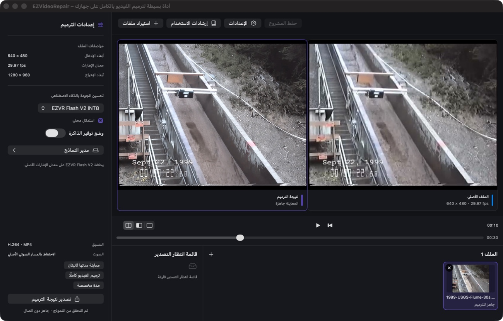
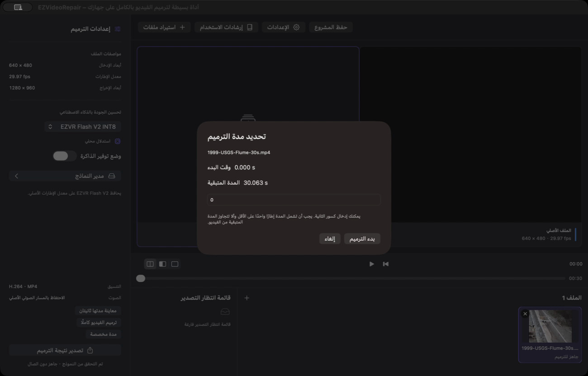
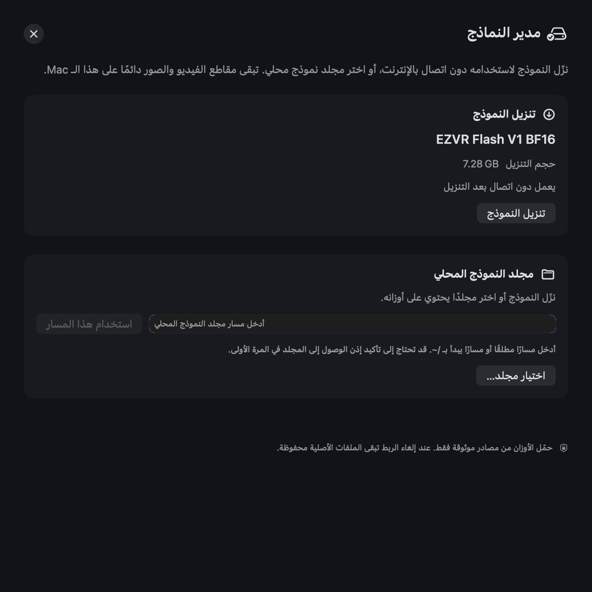
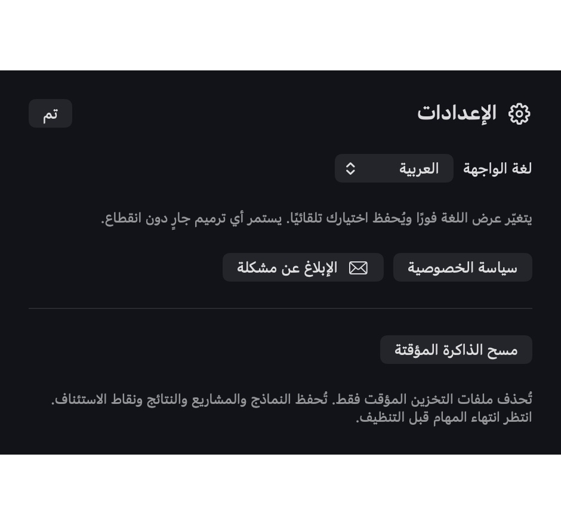

عاين التفاصيل أولًا
اختر نقطة البداية وشاهد معاينة مدتها ثانيتان. عند ترميم معاينة بدقة 1080p على أجزاء، يحافظ EZVR Flash V1 على توقيت الفيديو حتى إذا سبق الصوت أول إطار.
اكتشف تفاصيل جديدة في فيديو عائلي أو صورة قديمة. قارن الأصل بالنتيجة على جهاز Mac. من المعاينة إلى التصدير، تبقى ملفاتك ونتائج الترميم على جهازك.
الإصدار: 0.0.6
تاريخ التحديث:
التوافق: جهاز Mac مزوّد بشريحة من Apple ويعمل بنظام macOS 14 أو أحدث.
طريقة التثبيت: افتح ملف DMG واسحب EZVideoRepair إلى مجلد «التطبيقات».

شاهد كيف تختار مقطعًا مدته خمس ثوانٍ وترمّمه في الواجهة العربية. يعرض التطبيق الفيديو الأصلي إلى اليمين والنتيجة إلى اليسار لتتمكّن من مقارنة التفاصيل.
تعذّر تشغيل الفيديو هنا. افتح ملف MP4.
صوّرت هيئة المسح الجيولوجي الأمريكية هذه التجربة في 22 سبتمبر 1999، وتُظهر جريان المياه فوق رواسب متآكلة. أرشيف التجربة بالإنجليزية.
تنزيل شرح الاستخدام بالواجهة العربية (MP4)
تعذّر تشغيل الفيديو هنا. افتح ملف MP4.
30.03 ثانية · الدقة الأصلية 640 × 480 بكسل · 29.97 إطارًا في الثانية
أوريغون، الولايات المتحدة · 22 سبتمبر 1999
أوقف الفيديو مؤقتًا وبدّل بين النسخ لمقارنة تموّجات الماء وتفاصيل الحاجز وأرقام الساعة في الإطار نفسه. يمكنك أيضًا التبديل أثناء التشغيل لمتابعة حركة الماء.
تضمّ كل نسخة مرمّمة الإطارات التسعمئة كلها. دقة الخرج 682 × 512 بكسل مع V1 و1280 × 960 بكسل مع V2.
هذه اللقطة الصامتة مقتطف مدته نحو 30 ثانية من تصوير هيئة المسح الجيولوجي الأمريكية. شاهد التسجيل الأصلي · أرشيف الهيئة بالإنجليزية.
تُظهر هذه اللقطات واجهة التطبيق بالعربية. انقر على أي لقطة لتكبيرها.



نزّل نموذجًا من مدير النماذج أو اختر مجلد نموذج متوافق على جهازك. بعد ذلك يمكنك معاينة ملفاتك وترميمها وتصديرها دون اتصال بالإنترنت.
استورد ملفاتك، وتفحّص المعاينة، ثم اختر ما تريد تصديره.
اختر نقطة البداية وشاهد معاينة مدتها ثانيتان. عند ترميم معاينة بدقة 1080p على أجزاء، يحافظ EZVR Flash V1 على توقيت الفيديو حتى إذا سبق الصوت أول إطار.
اختر معالجة الفيديو كاملًا أو حدّد مدة المقطع الذي يهمّك.
عاين مقاطع أفقية أو عمودية، أو افتح صورة لتفحّص تفاصيلها بعد الترميم.
افتح مشروعًا محفوظًا لمشاهدة النتيجة أو لمتابعة مهمة V1 من الإطارات المحفوظة التي تتوافق مع إعداداتك.
إذا تطابق الملف الأصلي وإعدادات الترميم، يستخدم التطبيق النتيجة المحفوظة ويوفّر وقت المعالجة.
يجري التنزيل في الخلفية. يمكنك متابعة تقدّمه وإيقافه مؤقتًا واستئنافه لاحقًا.
افتح ملف DMG واسحب التطبيق إلى مجلد «التطبيقات». عند تشغيله، نزّل نموذجًا أو اختر مجلد نموذج متوافق على جهازك.
اختر ملف الفيديو، وحدّد نقطة البداية، ثم أنشئ معاينة مدتها ثانيتان.
اختر الفيديو كاملًا أو جزءًا منه ثم صدّر النتيجة. احفظ المشروع إذا أردت العودة إليه لاحقًا.
احفظ المقاطع والصور المرمّمة في المجلد الذي تختاره. احتفظ بها لنفسك أو شاركها مع عائلتك.
تنزيل نسخة Mac (DMG)